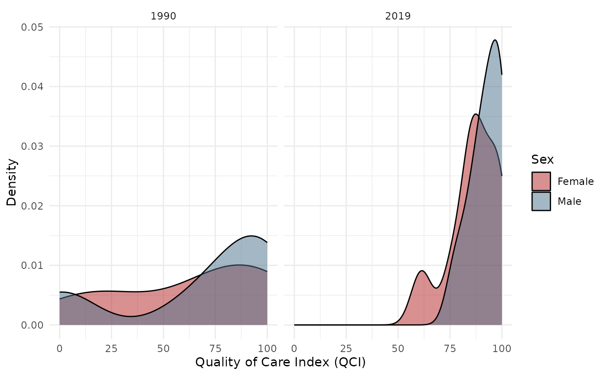

Creates density plots comparing Male and Female QCI score distributions. Supports comparing across two time points.
Arguments
- data
A data.frame with QCI results. Can be wide format (from pipeline output) or long format.
- score_col
Character. Column name containing the score to plot. Default
"qci_score".- years
Integer vector of 1 or 2 years to compare. Default
NULL(all years overlaid).- sex
Character vector of sex categories. Default
c("Male", "Female").- age
Character. Age group. Default
"Age-standardized".- alpha
Numeric. Transparency for density fills. Default
0.5.- colors
Named character vector. Default
c(Male = "skyblue4", Female = "firebrick").
Examples
data(sample_gbd)
result <- qci_pipeline(sample_gbd)
#> ℹ Cleaning and reshaping data...
#> ✔ Cleaned data: 9 locations, 3 years.
#> ℹ Computing epidemiological ratios...
#> ℹ Running PCA...
#> ℹ PCA done for "Both / Age-standardized": 74.1% variance explained (n=27).
#> ℹ PCA done for "Female / Age-standardized": 75.7% variance explained (n=27).
#> ℹ PCA done for "Male / Age-standardized": 73.2% variance explained (n=27).
#> ℹ Creating long format output...
#> ✔ QCI pipeline complete.
plot_qci_distribution(result$wide, years = c(1990, 2019))
